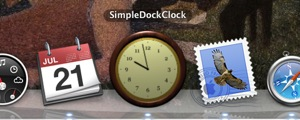
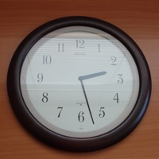
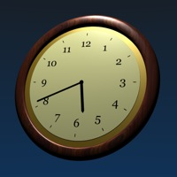

A simple analog clock for the dock on Leopard.
I recently bought an aluminum iMac, and it came with Leopard. All my other Mac’s were running Tiger before so I’ve only used this new version of Mac OS X for a few weeks. Talk about being the opposite of an early adopter!
One of the things I miss in Leopard is having an analog clock in the dock. In fact since Panther, Apple hasn’t provided Clock.app in the Applications folder. System Preferences lets you display a clock on the right side of the menu bar. But the analog version is just too small. I prefer analog clocks. A clock in the dock is the right size. The dock is a logical location for it because the date is shown on the dock icon for iCal. It’s also not distracting like a “floating” clock. So everytime I upgraded, I copied Clock.app to the new Applications Folder and that has worked.
But Clock.app from Jaguar no longer works for this purpose on Leopard. So I found myself writing this quick little application (and trying out Xcode 3). Let’s call it SimpleDockClock. I wish someone else has written it and let other people use it for free. For those who prefer a “floating” clock, I posted some code for that a long time ago. It still works!
But here’re the source code and the binary of my new SimpleDockClock. The binary requires at least Mac OS X 10.4 to run, but obviously it also runs on 10.5. Simply add SimpleDockClock.app to Login Items in the Accounts panel in System Preferences to run it automatically every time you login. Drag its application icon to the dock to “reserve” a place for it there.
The appearance of the clock is customizable too, albeit not too easily. Replace ClockFace.png, HourHand.png, and MinuteHand.png with your own images. Change the dimensions, origins, etc., hard coded in ClockController.m, if necessary. Note, however, that redistribution of SimpleDockClock or its parts is prohibited. So do this only for your personal use.
[Update 21 July 2008: New clock face!] SimpleDockClock is another one of those programs whose artwork took me much longer to do than their programming. I’ve always found design of icons and other graphic elements to be a challenging task. Recent hardware and system software advances have raised the bar on how good these must look even higher. Short of really learning to draw properly :-), I describe below my attempts to get acceptable results with the help of software tools.
In fact the only software I used for creating the clock face for SimpleDockClock was the GPL 3D modeling software Blender. It took a few days of reading and experimentation to learn enough about Blender to do what I wanted (but obviously Blender is capable of much much more). You can find many tutorials on Blender on the Web, but I recommend going through a few simple ones quickly. Then just read as much of the Blender User Guide as you need. There’re also many discussion forums and resources on the Web. I should at least mention the Blender Texture Disc, which contains many nice and useful textures and materials.
One of the benefits of designing icons using 3D modeling software is that once you’ve decided how the subject will look, the creation of its model is a more ”technical” process rather than artistic one. That, I can handle. And for a clock, this is quite easy. Here’s a (real) clock I have:
Here’s a 3D model of that clock I created in Blender:
I took some liberty with dimensions, colors, and materials. That’s another benefit of 3D modeling software: that one can experiment with the model, camera positions and angles, light sources, etc. quite easily. Since the Apple Human Interface Guidelines have very specific recommendations for how icons should look on the screen, the clock face ended up the way it now looks. A quick tip for rendering objects in Blender with a transparent background: select ”Premul” in the ”Render” button in the ”Scene” panel; also select ”RGBA” in the ”Format” button and choose a file format that supports alpha channel (e.g., PNG).
So, that was quite a bit of fun! Of course I have left out a lot of details on the use of Blender. That information is out there on the Web and “left as exercise”. It may take a little time to learn (easier if you know some computer graphics). But perhaps this is becoming an essential skill a computer user should have nowadays, like you needed to know a good drawing program such as Illustrator. Sure, I’m not going to become a full-time icon designer any time soon. But it’ll be much easier to create a few icons for the programs I write in the future.
Category: Programming